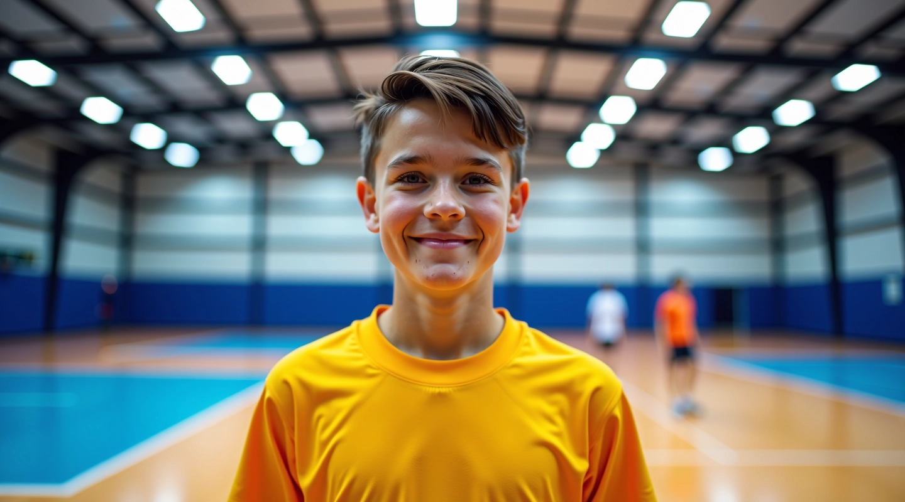
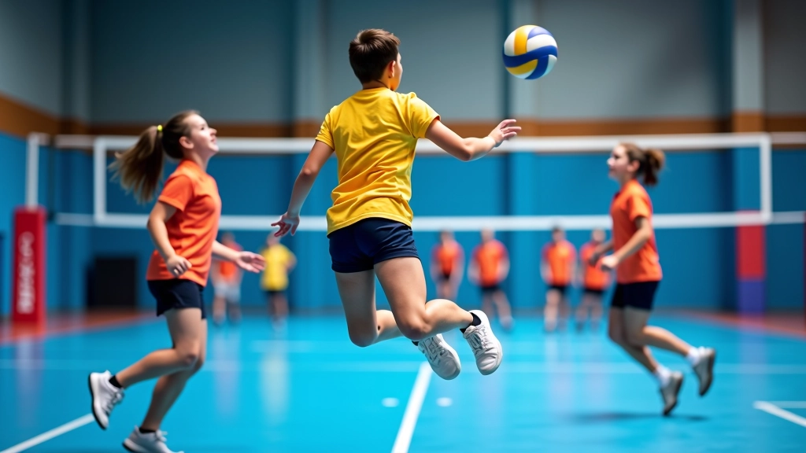

معسكر تطوير الناشئين في الكرة الطائرة
برنامج متخصص لتدريب الناشئين على مستويات عالية من التقنية واللياقة البدنية
حول برنامج التطوير
نحن متخصصون في تطوير مهارات الناشئين بكرة الطائرة. البرنامج يجمع بين التدريب التقني والتطوير البدني والإعداد النفسي.
يعمل فريقنا على تحسين دقة التمرير، قوة الإرسال، والحركة على الملعب. كل جلسة تدريب مصممة بعناية لتناسب مستوى اللاعب وعمره. نركز على الأساسيات أولاً ثم ننتقل للتقنيات المتقدمة.
ما يميزنا أننا لا نتسرع في التدريب. كل لاعب يتطور بسرعته الخاصة، والمدربون يقدمون ملاحظات مستمرة ودعماً فردياً.

محاور البرنامج الرئيسية
نركز على جوانب متعددة من تطوير اللاعب
تقنيات الضرب والتمرير
تعلم الحركات الصحيحة للضرب الأمامي والخلفي، وتحسين دقة التمرير من خلال تمارين متكررة وملاحظات مباشرة من المدربين.
الإرسال بقوة وتحكم
نعلم أساليب الإرسال المختلفة ونعالج الأخطاء الشائعة. الهدف هو الوصول لإرسال قوي مع الحفاظ على الدقة والسيطرة.
اللياقة البدنية المتخصصة
برنامج تمارين مخصص لبناء القوة والسرعة والمرونة والقدرة على التحمل. تمارين تقوية عضلات الأرجل والأكتاف والجذع.
التكتيكات والذكاء الرياضي
فهم اللعبة وأماكن الوقوف على الملعب والحركة الذكية. نعلم اللاعبين كيفية قراءة اللعبة واتخاذ القرارات الصحيحة.
رحلة البرنامج
تطورنا المستمر في تدريب الناشئين
البداية
انطلقنا بفكرة بسيطة: تقديم تدريب منظم وجدي للناشئين في كرة الطائرة بمركز شباب السويس.
توسع البرامج
أضفنا برامج متخصصة للفئات العمرية المختلفة وبدأنا التركيز على التطوير الفني المنهجي.
تطوير المحتوى التعليمي
بدأنا نشر أدلة عملية وشاملة حول تقنيات الكرة الطائرة لمساعدة الناشئين والآباء.
توسع الخدمات
أضفنا برامج لياقة متخصصة وزيادة عدد الجلسات التدريبية لتلبية الطلب المتزايد.
ما نؤمن به
التدريب المنهجي
كل جلسة لها هدف واضح. نبدأ بالإحماء المناسب، ننتقل للتمارين التقنية، ثم نختم بألعاب تطبيقية. لا نترك شيء للصدفة.
الاهتمام الفردي
كل لاعب فريد. نراقب التقدم الفردي ونقدم ملاحظات مخصصة. اللاعب الخجول يحصل على وقت أكثر، والمتسرع نعلمه الصبر.
بناء الثقة
التدريب ليس فقط عن المهارات الحركية. نساعد الناشئين على بناء ثقة بأنفسهم من خلال التحديات المدروسة والإنجازات الصغيرة.
الحب للعبة
أهم شيء هو أن يحب الناشئ اللعبة. التدريب الجاد ضروري، لكن المتعة والمرح أساسيان لاستمرار الدافعية.
المقالات والأدلة
محتوى تعليمي يساعدك على الفهم والتطور

الخطوات الأساسية لإتقان تقنية التمرير
تعلم كيفية تحسين دقة التمرير من خلال تقنيات صحيحة وتدريبات متكررة تناسب جميع مستويات اللاعبين الناشئين.
اقرأ المزيد
تطوير مهارات الإرسال بقوة وسيطرة
اكتشف الأخطاء الشائعة في الإرسال والطرق الفعالة لتصحيحها وزيادة قوة الإرسال مع الحفاظ على الدقة والتحكم.
اقرأ المزيد
برنامج اللياقة البدنية للاعبي الكرة الطائرة
تعرف على أهم التمارين اللياقية والتدريبات الخاصة بلاعبي الكرة الطائرة لتحسين القوة والسرعة والمرونة والقدرة على التحمل.
اقرأ المزيدمبادئ عملنا
هذا ما نركز عليه في كل جلسة تدريب
التعليم التدريجي
من الأساسيات إلى المتقدم، خطوة بخطوة. لا نتسرع ولا نتأخر.
العمل الجماعي
الكرة الطائرة لعبة فريق. نعلم الناشئين التعاون والتواصل مع زملائهم.
الأهداف الواضحة
كل لاعب يعرف ما يسعى لتحقيقه. نتابع التقدم بانتظام ونعدل الخطط حسب الحاجة.
المرح والتحفيز
التدريب يجب أن يكون ممتعاً. نمزج الجدية بالألعاب والمسابقات الصغيرة.
أسئلة شائعة
إجابات لأكثر الأسئلة التي نسمعها
عن البرنامج
هل البرنامج مناسب للمبتدئين؟
نعم بالتأكيد. نستقبل ناشئين بدون أي خبرة سابقة. البرنامج مصمم بحيث يبدأ كل لاعب من المستوى الذي هو فيه، سواء كان مبتدئاً أو لديه بعض الخبرة.
كم عدد الجلسات في الأسبوع؟
يتوفر لدينا برامج مختلفة. معظم الناشئين يتدربون 2-3 جلسات أسبوعياً، كل جلسة 90 دقيقة. يمكنك اختيار البرنامج الذي يناسب جدولك.
ما الفئات العمرية المقبولة؟
نستقبل ناشئين من 8 سنوات فما فوق. لدينا مجموعات منفصلة حسب العمر: 8-10، 11-13، 14-16، و17+. هذا يضمن أن التدريب مناسب لكل مرحلة عمرية.
التسجيل والمتطلبات
كيف أسجل في البرنامج؟
يمكنك التواصل معنا عبر صفحة التواصل. سنعطيك معلومات كاملة عن البرامج المتاحة والمواعيد والتفاصيل الأخرى. بعدها يمكن التسجيل مباشرة.
هل أحتاج لشراء معدات خاصة؟
كل ما تحتاجه هو ملابس رياضية مريحة وحذاء كرة طائرة. نحن نوفر الكرات والشباك وأي معدات أخرى في الملعب.
هل هناك فترة تجريبية؟
نعم، يمكنك حضور جلسة تجريبية أولاً لتعرف البرنامج والمدربين والناشئين الآخرين. بعدها تقرر ما إذا كنت تريد الالتحاق أم لا.
التطور والتقدم
متى سأرى تحسناً في مستوى لاعبي؟
معظم الناشئين يلاحظون تحسناً ملموساً بعد 4-6 أسابيع من التدريب المنتظم. التحسن يعتمد على مدى التزام اللاعب والانتظام في الحضور.
هل يوجد تقييم منتظم للمستوى؟
نعم. نقيم مستوى كل لاعب بشكل مستمر من خلال الملاحظات المباشرة في التدريب. كل شهر أو شهرين نعطي ملخص تقدم مفصل للآباء.
هل يمكن الالتحاق بفريق منافسة؟
بالتأكيد. عندما يصل اللاعب للمستوى المطلوب، نساعده على الالتحاق بفريق المدرسة أو فريق منافسة محلي إذا رغب في ذلك.
جاهز لبدء الرحلة؟
انضم إلينا في معسكر تطوير الناشئين في الكرة الطائرة. سواء كنت مبتدئاً أو لديك بعض الخبرة، لدينا البرنامج المناسب لك.
نستخدم ملفات تعريف الارتباط لتحسين تجربتك. بمتابعتك للموقع، أنت توافق على استخدامنا للملفات.